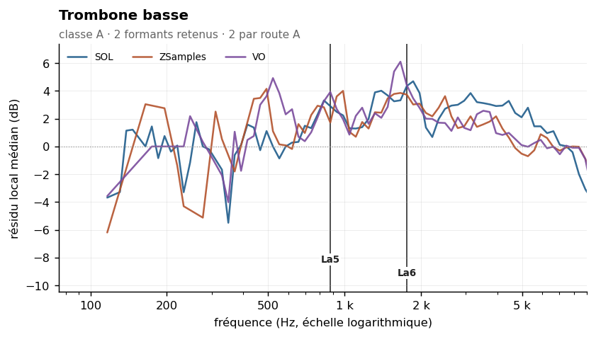
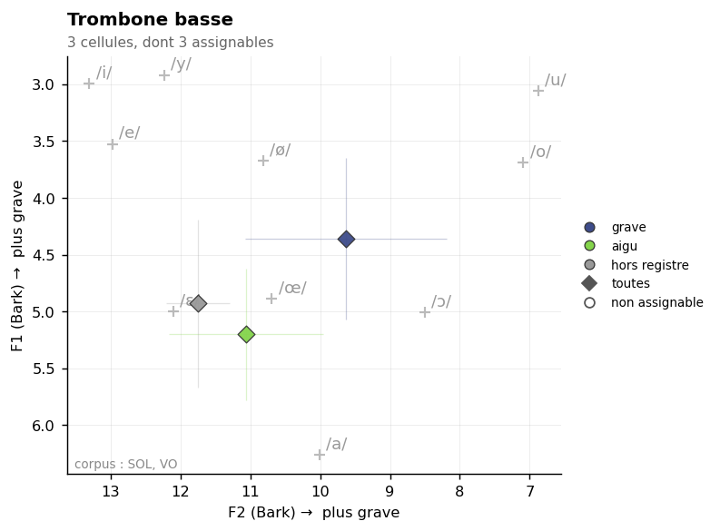

Bass trombone
Sommaire › Les cuivres
| Classe | Provenance | Échantillons | Tessiture | Formants établis |
|---|---|---|---|---|
| A | VSL | 144 | A | 2 |
| Formant | Note | Corpus | Localisation |
|---|---|---|---|
| 879 Hz | La5 | SOL ZSamples VO | localisé |
| 1759 Hz | La6 | SOL ZSamples VO |


Statut des formants — révision du 26/10/2026
Confrontation des cinq corpus. Provenance de ce corpus : VSL / ConTimbre / perso (Yan_Adds).
Formant Statut 879 Hz route A — SOL + VO + ZSamples au même point de grille, 879 Hz · zone vue par SOL, VO, ZSamples · pic localisé, Q = 2.7 1759 Hz route A — VO + ZSamples au même point de grille, 1669 Hz · zone vue par SOL, VO, ZSamples. ⚠ La valeur de cette fiche, 1759 Hz, est à +0.9 demi-ton du couple : c'est 1669 Hz qui est établi
etendue_residudans l'en-tête n'est pas une largeur de bande : c'est l'étendue du résidu de la méthode 8, souvent une butée de plage. Les largeurs mesurées sont dans_LARGEURS-DE-BANDE.md.
Méthode 8 — trois formants retenus, aucun rejeté. Le ρ le plus bas de tout le corpus mesuré. Voir
00-METHODE.md.
ρ = 0,15. C'est la valeur la plus basse des dix-huit instruments mesurés à ce jour, bois et cuivres confondus — plus basse encore que celle du hautbois (0,26), jusqu'ici détentrice du record. Le spectre du trombone basse est donc le plus indépendant de la hauteur jouée de tout l'orchestre mesuré.
À quoi s'ajoutent des conditions de mesure optimales : 144 échantillons, 90 harmoniques par note en médiane (le plafond de la plage analysée), une tessiture descendant à 29 Hz entièrement sous la limite de validité des méthodes à ordre fixe, et une enveloppe vraie stable (646 Hz, σ = 177 Hz).
La notion de formant est donc ici pleinement pertinente, et c'est le cas où elle l'est le plus. Les trois candidats détectés passent tous les deux tests.
| Zone | Résidu | Largeur −3 dB | Notes distinctes | Verdict |
|---|---|---|---|---|
| 879 Hz | +2,7 dB | large | 23 | retenu |
| 1 759 Hz | +3,9 dB | large | 32 | retenu |
| 3 320 Hz | +3,3 dB | large | 39 | retenu |
| Zone | k = 4–7 | k = 8–15 | k ≥ 16 | Robustesse |
|---|---|---|---|---|
| 879 Hz | +3,4 | +2,4 | +2,3 | oui |
| 1 759 Hz | +5,0 | +4,2 | +4,1 | oui |
| 3 320 Hz | +5,4 | +4,3 | +3,2 | oui |
Résidus décroissant régulièrement avec le rang, ce qui est le comportement attendu : les harmoniques très élevés sont plus bruités et leur mesure plus dispersée. Aucun changement de signe, aucune instabilité.
Les positions (879, 1 759, 3 320 Hz) sont dans un rapport proche de 1 : 2 : 4 — soit une série d'octaves. À examiner : s'agit-il de modes successifs d'un même résonateur, ou de trois résonances distinctes ? La question se pose aussi pour le trombone ténor, dont les quatre formants ne suivent pas ce schéma.
| Descripteur | Valeur | Lecture |
|---|---|---|
| Pente spectrale médiane | −13,8 dB/octave (σ 4,8) | la plus plate des cuivres |
| Harmoniques par note | 90 [16–90] | plafond de mesure |
| Balance impair − pair | −0,1 dB | parfaitement équilibrée, cas unique du corpus |
| Enveloppe vraie (méthode 6) | 646 Hz, σ 177 | stable |
| ρ(pic, f0) | 0,15 | record de tout le corpus |
La balance impair − pair de −0,1 dB est à signaler : c'est la seule valeur du corpus pratiquement nulle. Tous les autres instruments sont nettement négatifs (jusqu'à −7,0 pour le piccolo) ou nettement positifs (jusqu'à +5,1 pour la clarinette contrebasse). Le trombone basse produit donc un spectre parfaitement équilibré entre partiels pairs et impairs, ce qui est cohérent avec son rôle de fondation harmonique : il ne privilégie aucune série.
| Source | Valeur annoncée | Notre mesure | Accord |
|---|---|---|---|
| Backus, Giesler, Meyer | aucune donnée | — | instrument non étudié dans les sources classiques |
| Yan_Adds (ancien, Fp) | 894 ± 257 Hz, /a/ | formant retenu à 879 Hz | très bon |
Ancien pipeline specenv |
F1 = 258 Hz, /u/ | — | zone de la fondamentale |
| Cepstre mai 2026 (ordre 80) | 925 Hz, σ 297, 8 % sur un harmonique | 879 Hz | bon |
Trois méthodes indépendantes convergent sur la zone 879–925 Hz : l'enveloppe composite (879 Hz), l'ancien Fp (894 Hz) et le cepstre de mai 2026 (925 Hz). La convergence est ici réelle et non fortuite, et elle s'explique : la tessiture du trombone basse étant presque entièrement sous 276 Hz, le cepstre d'ordre fixe 80 était valide pour cet instrument — seulement 8 % de ses pics tombaient sur un harmonique, l'un des taux les plus bas du corpus de mai 2026.
C'est un bon exemple du fait que les méthodes anciennes n'étaient pas fausses partout : elles étaient valides précisément pour les instruments graves, et invalides pour les aigus.
Les formants à 1 759 et 3 320 Hz sont inédits.
Data/registres.md, entrée commune « trombones » : sons pédale E1–A#1 · grave A#1–E3 ·
médium E3–E4 · aigu au-dessus. À affiner pour le trombone basse, dont la tessiture mesurée
descend à A#0, soit plus bas que l'entrée générique.
Mesure par registre : non effectuée.
Rang du formant dans son propre spectre : 50 % signifie que les deux méthodes ne s'accordent pas mieux là qu'ailleurs. Voir ../_APPARIEMENT-LPC.md.
| Formant | Statut | Rang |
|---|---|---|
| 879 Hz | route A | 67,6 % |
Part de pics non localisables — l'enveloppe n'y redescend pas de 3 dB des deux côtés, donc le formant n'a pas de largeur mesurable. Voir ../_LARGEUR-PAR-REGISTRE.md.
| doux | moyen | fort | |
|---|---|---|---|
| tous registres | 76 % | 28 % | 22 % |
| sons pédale | — | 40 % | 34 % |
| grave | — | 23 % | 18 % |
| médium | — | 0 % | 0 % |
| hors registre | — | 43 % | 26 % |
Effet doux → fort : +54 points. La localisation s'améliore en jeu fort.
20 paires calculées. Fusion moyenne : 31 %. Voir ../_MELANGES.md.
| Couleur nouvelle avec | Se fond avec | ||
|---|---|---|---|
| Contrebasse | 53 % | Trombone ténor | 51 % |
| Hautbois | 52 % | Flûte | 38 % |
| Violoncelle | 52 % | Cor anglais | 33 % |
À compléter. Éléments acquis :
Aucun à ce stade. Figures prévues dans ../Versions-html-and-docx/media/ :
| Fichier prévu | Contenu |
|---|---|
trombone_basse_composite.png |
enveloppe composite |
trombones_pupitre.png |
superposition ténor / basse — figure d'homogénéité du pupitre |
trombone_basse_convergence.png |
les trois méthodes convergentes sur 879–925 Hz |
corpus_rho.png |
figure générale : ρ des dix-huit instruments, du trombone basse (0,15) au piccolo (0,96) |
La dernière figure est la meilleure synthèse de toute la reprise : elle ordonne l'orchestre sur un axe unique, de l'instrument à formant fixe le plus pur à l'instrument suiveur le plus pur, et justifie visuellement la typologie en deux classes.
Un déclassement. La zone à 3 320 Hz passe de retenue à fragile-cr : +4,6 dB [IC +4,4] en dessous du rang 48, mais −1,2 dB [IC −2,3] au-dessus. Le découpage adaptatif au rang médian révèle un changement de signe que les quatre groupes fixes masquaient, leurs effectifs étant répartis différemment.
Conséquence pour les rapprochements notés plus haut : la coïncidence relevée entre cette zone et le basson (3 320 Hz, lui aussi déclassé en fragile le même jour) et la clarinette en Sib (3 517 Hz, retenue) doit être considérée comme non établie. Elle reposait sur deux valeurs dont une est désormais fragile et l'autre déclassée.
Les deux autres formants, 879 et 1 759 Hz, sont confirmés par le critère assoupli, avec des intervalles de confiance larges et positifs des deux côtés du rang médian.
00-METHODE.md).